研究概要
北極振動
北極振動（Arctic Oscillation：AO）は冬季北半球で卓越する変動パターンで、気候変動、地球温暖化との関連から注目されてきました。AOは東西方向に一周平均した視点では、極域と中緯度域で気圧が逆傾向に変化するシーソーパターンで特徴付けられており、そのシーソーパターンは惑星スケールの大規模な波活動による運動量輸送によって維持されていることが知られています。
他方で、AOは東西平均した構造の他に太平洋域や大西洋域に極値を持つ局所的に偏った構造を持っていて、アリューシャン低気圧やアゾレス高気圧の勢力とも関係しています。そのため、AOは日本付近の冬季モンスーンの強弱といった地域的な気候に影響を及ぼしうるものですが、執筆当時にはそうしたAOの局所構造がどのように維持されているのか詳細には調べられていませんでした。
そこで、米国のNCEP/NCARが提供している客観解析データを用いて、AOの正負の位相が現れた時期における波活動の特徴を合成図解析により抽出し、AOの局所構造との関係を調べました。その結果、太平洋域と大西洋域の波活動によってAOが局所的に偏る構造が維持されている可能性があることが分かりました。
惑星スケールの大規模な波活動に相当する準定常の順圧的な波によるものは、特に大西洋域においてAO正位相の維持に、太平洋域、大西洋域双方においてAO負位相の維持に関わっていました。他方、非定常な波は、高低気圧の活動が活発な領域である太平洋域、大西洋域のストームトラック周辺から北極域に伝播し、AO負位相の際に正位相よりも高緯度側の西風を弱めていることが解析されました。このことは、ストームトラック周辺の波活動によりAOの局所的に偏った構造が維持されていることを意味しています。
他方で、AOは東西平均した構造の他に太平洋域や大西洋域に極値を持つ局所的に偏った構造を持っていて、アリューシャン低気圧やアゾレス高気圧の勢力とも関係しています。そのため、AOは日本付近の冬季モンスーンの強弱といった地域的な気候に影響を及ぼしうるものですが、執筆当時にはそうしたAOの局所構造がどのように維持されているのか詳細には調べられていませんでした。
そこで、米国のNCEP/NCARが提供している客観解析データを用いて、AOの正負の位相が現れた時期における波活動の特徴を合成図解析により抽出し、AOの局所構造との関係を調べました。その結果、太平洋域と大西洋域の波活動によってAOが局所的に偏る構造が維持されている可能性があることが分かりました。
惑星スケールの大規模な波活動に相当する準定常の順圧的な波によるものは、特に大西洋域においてAO正位相の維持に、太平洋域、大西洋域双方においてAO負位相の維持に関わっていました。他方、非定常な波は、高低気圧の活動が活発な領域である太平洋域、大西洋域のストームトラック周辺から北極域に伝播し、AO負位相の際に正位相よりも高緯度側の西風を弱めていることが解析されました。このことは、ストームトラック周辺の波活動によりAOの局所的に偏った構造が維持されていることを意味しています。
論文発表
- Yamashita, Y., H. L. Tanaka, and M. Takahashi (2005): Observational analysis of the local structure of the wave activity flux associated with maintenances of the Arctic Oscillation index, SOLA, 1, 53–56, doi:10.2151/sola.2005-015
関連リンク
惑星大気
太陽系には地球の他にも大気を持った惑星があり、地球大気と同じ流体の方程式に従う他の惑星大気で地球大気と似た現象を調べて比較することに流体力学としての観点から興味を持っていました。火星大気の地表気圧は地球大気の100分の1程度と小さいものの、両惑星の自転周期は近く、大気の運動も偏西風帯の存在や中高緯度の高低気圧といった点で似通った部分があります。
地球大気のAOは、東西方向に一周平均した視点では、偏西風帯の西風の強弱とも対応しており、偏西風帯や中高緯度の高低気圧が存在する火星大気においても同様の視点から調べればAOと似通った現象が起こっていても不思議ではないと思いました。文献を調べたところ、火星大気では論文執筆当時までに探査機による大気観測が行われており、実際に、偏西風帯の西風の強さが変動するAOのような現象を報告している論文が見つかりました。
そこで、火星大気におけるAOのような現象と地球大気のAOとの相違点について研究を始めたのですが、観測が乏しいためAOの力学的なメカニズムを知るために十分なデータが得られませんでした。この問題を克服するため、地球大気の気候を調べるために開発されてきた大気大循環モデル（Atmospheric General Circulation Model：AGCM）を火星大気のパラメータに変え、火星大気の地形や地表面状態などの境界条件に変更した火星AGCMを用いて、AOのような現象の成因を探ることにしました。
火星AGCMではAOに相当する環状構造を含む偏西風帯の西風の変動（図１c）の他に、観測事実として報告されていた東西方向に波数1の構造を持つ大規模な波がシミュレーションされていました（図１a、b）。火星AGCMのシミュレーション結果の解析から、AOの構造の維持には、火星では最も卓越する短周期の波数1の波による運動量輸送が重要であることが解析されました。AOの構造の維持に波による運動量輸送が重要であることは、地球と火星の両惑星に共通しているけれども、地球では準定常の順圧的な波が、火星では波数1の傾圧波が重要でした。
シミュレーション結果を詳細に調べると、環状構造の他に火星の大規模な起伏に起因する局所的に偏った構造が現れており、大気と海洋のコントラストや大規模起伏により太平洋域や大西洋域に極値を持つ構造が現れる地球大気のAOとの類似性が認められました。一方で、火星大気における波活動を解析した結果、AOの局所構造は、火星の大規模な起伏により励起された地形性の波により波数1の傾圧波自身の振幅が山の下流側で増大され運動量輸送が強まることで維持されることが分かり、ストームトラック周辺の波活動により局所的に偏った構造が維持される地球大気とは維持プロセスが異なると考えられます。
火星大気GCMを用いて再現された火星大気のデータに対して主成分分析を行い、1、2番目に卓越するモード（EOF-1、2）として波数１の傾圧的な波を取り出し（図１a、b）、３番目に卓越するモード（EOF-3）として環状構造を含むようなパターンを取り出しました（図１c）。
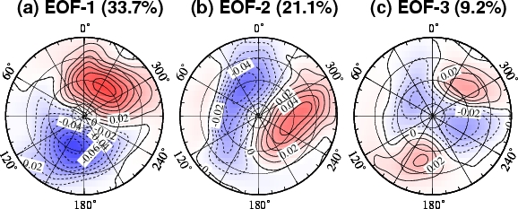
図1：火星GCMの地表面気圧に対して主成分分析を行い、取り出された１〜３番目までのモード（Yamashita et al. 2007のFigure 2）。第1、第2成分が周期的に変化する東西波数1の波に対応しており、第3成分が環状構造を含むようなパターンに対応する。
取り出された環状モードと似たパターンの場合の平均から逆符号の場合の平均を引き、環状モードと関連の大きな変動を見ると, 東西風は地表から40 kmまで同じ符号の構造を示しました。この構造には、主に波数１の波による東西風加速が大きく関係していました（図２a）。
図2：波による西風加速（陰影）とE-Pフラックス（矢印、波の伝播の違いに対応）、東西風の変化（等値線）。環状モードと似たパターンの場合の平均から逆符号の場合の平均を引いた。(b) 残差子午面循環による西風加速。(Yamashita et al. 2007のFigure 4）
地球大気のAOは、東西方向に一周平均した視点では、偏西風帯の西風の強弱とも対応しており、偏西風帯や中高緯度の高低気圧が存在する火星大気においても同様の視点から調べればAOと似通った現象が起こっていても不思議ではないと思いました。文献を調べたところ、火星大気では論文執筆当時までに探査機による大気観測が行われており、実際に、偏西風帯の西風の強さが変動するAOのような現象を報告している論文が見つかりました。
そこで、火星大気におけるAOのような現象と地球大気のAOとの相違点について研究を始めたのですが、観測が乏しいためAOの力学的なメカニズムを知るために十分なデータが得られませんでした。この問題を克服するため、地球大気の気候を調べるために開発されてきた大気大循環モデル（Atmospheric General Circulation Model：AGCM）を火星大気のパラメータに変え、火星大気の地形や地表面状態などの境界条件に変更した火星AGCMを用いて、AOのような現象の成因を探ることにしました。
火星AGCMではAOに相当する環状構造を含む偏西風帯の西風の変動（図１c）の他に、観測事実として報告されていた東西方向に波数1の構造を持つ大規模な波がシミュレーションされていました（図１a、b）。火星AGCMのシミュレーション結果の解析から、AOの構造の維持には、火星では最も卓越する短周期の波数1の波による運動量輸送が重要であることが解析されました。AOの構造の維持に波による運動量輸送が重要であることは、地球と火星の両惑星に共通しているけれども、地球では準定常の順圧的な波が、火星では波数1の傾圧波が重要でした。
シミュレーション結果を詳細に調べると、環状構造の他に火星の大規模な起伏に起因する局所的に偏った構造が現れており、大気と海洋のコントラストや大規模起伏により太平洋域や大西洋域に極値を持つ構造が現れる地球大気のAOとの類似性が認められました。一方で、火星大気における波活動を解析した結果、AOの局所構造は、火星の大規模な起伏により励起された地形性の波により波数1の傾圧波自身の振幅が山の下流側で増大され運動量輸送が強まることで維持されることが分かり、ストームトラック周辺の波活動により局所的に偏った構造が維持される地球大気とは維持プロセスが異なると考えられます。
火星大気GCMを用いて再現された火星大気のデータに対して主成分分析を行い、1、2番目に卓越するモード（EOF-1、2）として波数１の傾圧的な波を取り出し（図１a、b）、３番目に卓越するモード（EOF-3）として環状構造を含むようなパターンを取り出しました（図１c）。
取り出された環状モードと似たパターンの場合の平均から逆符号の場合の平均を引き、環状モードと関連の大きな変動を見ると, 東西風は地表から40 kmまで同じ符号の構造を示しました。この構造には、主に波数１の波による東西風加速が大きく関係していました（図２a）。
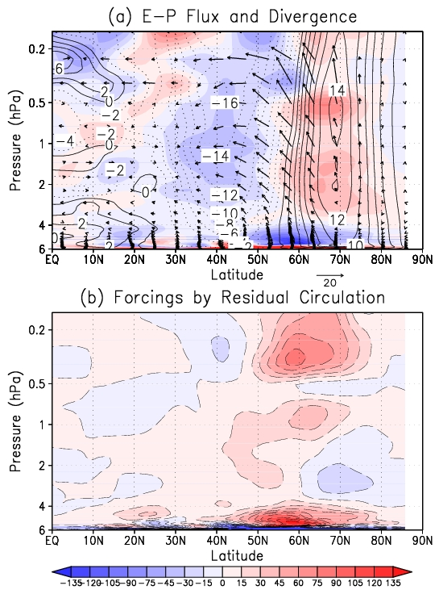
論文発表
- Yamashita, Y., T. Kuroda and M. Takahashi (2007): Maintenance of zonal wind variability associated with the annular mode on Mars, Geophys. Res. Lett., 34, L16819, doi:10.1029/2007GL030069.
関連リンク
太陽活動の成層圏大気への影響
太陽活動の11年周期に伴い、紫外線域の放射の強度が数％程度変動することが知られています。東京大学気候システム研究センターと国立環境研究所で開発された化学気候モデル（Chemistry Climate Model：CCM）は、全球規模の気候計算に用いられてきた3次元数値気候モデルにオゾンなどの化学反応や輸送も含めたもので、太陽紫外線変動に伴うオゾン濃度の変化、大気による3次元的なオゾン輸送、成層圏オゾンに関連する化学反応を計算することができます。
図3（a）は、CCMを用いて太陽活動の極大期実験と極小期実験を行い、極小期に対して極大期にオゾンが何％増加するかを示しています。オゾンの多い上部成層圏、下部中間圏においては、従来の説明のとおり太陽放射増大時にオゾン生成が増加しそれに伴って気温が上昇するというメカニズムで説明できました。
赤道成層圏下部に着目すると、極大期と極小期で１％程度のオゾン濃度の差が見られます（図3a）。成層圏下部ではオゾンの化学寿命が長いことから、その影響は主にオゾンの輸送を介してのものであると考えられます。そこで、オゾン輸送を担う子午面循環などを調べてみると、太陽活動に伴って成層圏下部の子午面循環の違いが生じており、輸送を変えて赤道成層圏下部のオゾン濃度の差を生じさせていることが分かりました（図3b）。
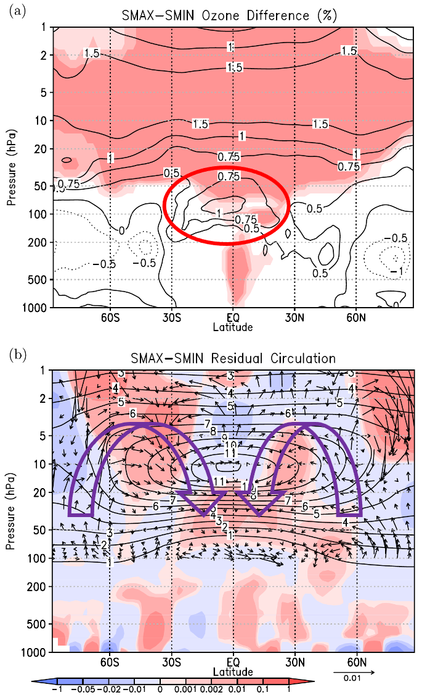
図3：（a）太陽活動極大期実験と極小期実験を行い、極小期に対して極大期にオゾンが何％増えるかを示した。色は有意な領域。（b）ベクトルは極大期と極小期の間の子午面循環の差で、コンターは気候平均したオゾン濃度。オゾン濃度の濃い部分から薄い部分にベクトルが向いていると、その場所では輸送によって極大期にオゾンが増加することを意味する。(Yamashita et al. 2010のFigure 1)
図3（a）は、CCMを用いて太陽活動の極大期実験と極小期実験を行い、極小期に対して極大期にオゾンが何％増加するかを示しています。オゾンの多い上部成層圏、下部中間圏においては、従来の説明のとおり太陽放射増大時にオゾン生成が増加しそれに伴って気温が上昇するというメカニズムで説明できました。
赤道成層圏下部に着目すると、極大期と極小期で１％程度のオゾン濃度の差が見られます（図3a）。成層圏下部ではオゾンの化学寿命が長いことから、その影響は主にオゾンの輸送を介してのものであると考えられます。そこで、オゾン輸送を担う子午面循環などを調べてみると、太陽活動に伴って成層圏下部の子午面循環の違いが生じており、輸送を変えて赤道成層圏下部のオゾン濃度の差を生じさせていることが分かりました（図3b）。
論文発表
- Yamashita, Y., K. Sakamoto, H. Akiyoshi, M. Takahashi, T. Nagashima, and L. B. Zhou (2010): Ozone and temperature response of a chemistry climate model to the solar cycle and sea surface temperature, J. Geophys. Res., 115, D00M05, doi:10.1029/2009JD013436.
関連リンク
QBOの極域への影響
赤道成層圏には、準2年周期振動（QBO）と呼ばれる、西風と東風が約2年周期で交代して現れ下降する卓越した現象が存在します（図4）。QBOに伴い、熱帯周辺のみならず中高緯度域の大気にもQBOと同期した変動が存在することが知られています。QBOの北極渦への影響については、QBOに伴う惑星波のクリティカルラインの違いが波の伝播に影響すると考えられてきましたが、論文執筆時点では、その詳細については十分には理解されていませんでした（図5）。
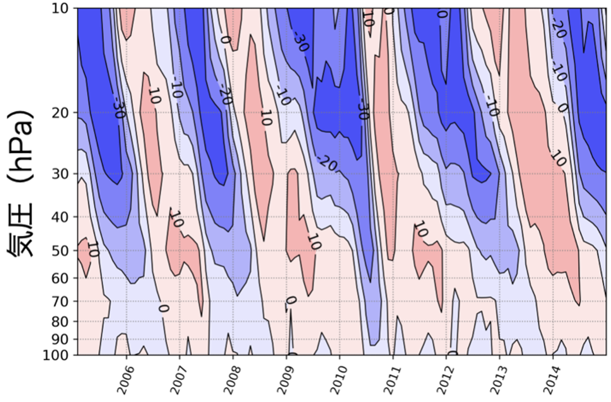
図4：客観解析データJRA-55の2005〜2014年のデータから作成した、赤道東西風の時間―高度断面図。上空に現れた西風と東風の風系が時間とともに下降していく様子が分かる。
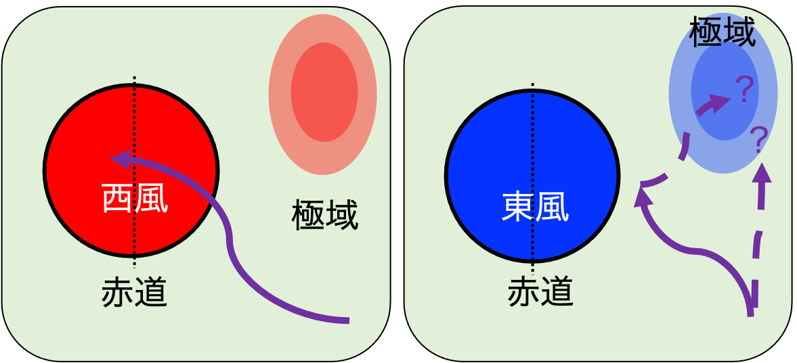
図5：QBOに伴う赤道付近の風と、それが極域への波伝播をどのように変えるのかを模式的に表した。赤道付近が西風の場合には、惑星波が赤道付近まで伝播でき極渦が強くなる傾向にある。他方、赤道付近が東風の場合には、何らかのプロセスで極域への波伝播が大きくなり、極渦が弱くなる傾向にあるとされてきた。
Yamashita et al.（2011）では、QBOの北極渦への影響について、以前より指摘されていた下部成層圏50 hPa 付近（約20 km）に極値を持つQBO の他に、それより上空の中部成層圏10 hPa 付近（約30 km）に極値を持つQBOが赤道周辺の惑星波の伝播を変えることで、成層圏の子午面循環や気温の応答を引き起こし、さらに北極渦に影響するプロセスを提唱しました。
QBOの南極渦への影響についても興味を持っており、Yamashita et al.（2018）では、中部成層圏QBOや下部成層圏QBOが南極渦に及ぼす影響プロセスを再考しようと試みました。論文執筆当時までの研究では、QBOが南極渦強度にも影響を及ぼすことが指摘されてはいましたが、QBO西風相と東風相のコンポジット平均の差を用いて評価されており、太陽周期やエルニーニョ・南方振動（ENSO）など他の年々変動の影響を含む可能性が残っていました。
またQBOを定義する高度や定義方法によっても結果が異なっていたため、本研究ではQBO位相の定義方法を工夫し、1960〜2010年までの長期間の客観解析データから重回帰解析により取り出すことで、他の変動の影響と分離して調べることにしました。
まず、赤道東西風を主成分分析して得られた第１、第２主成分をそれぞれ中部成層圏QBO、下部成層圏QBOの指標とし、重回帰解析の説明変数として導入しました。他の説明変数として、オゾンホール面積と密接に関係する等価実効成層圏塩素（EESC）、太陽活動、ENSO、火山噴火の項を導入しました。このような工夫を行い解析した結果、QBOの南極渦への影響は北極渦とは異なり、２つの経路で生じることが示唆されました。
まず１つ目の影響経路として、中部成層圏QBOが子午面循環を誘発することで低緯度域〜高緯度域の大気応答を引き起こすプロセスを見出しました。これにより、南極渦の中心軸が季節進行の中で下降している速さが、QBO西風年の８〜11月に高緯度域（南緯60度付近）で遅くなっていることを説明できるようになりました。
１つ目の影響経路では、南半球晩冬に当たる８月において南極渦が一時的に弱まる応答を説明できていませんでしたが、１つ目の影響経路で説明できていない部分を詳細に調べることで２つ目の影響経路を見出すことができました。２つ目の影響経路は、８月において下部成層圏QBOが南半球中高緯度域の対流圏から成層圏への惑星波の上向き伝播の増大を引き起こすプロセスで、このプロセスを考えることで８月に南極渦が一時的に弱まる傾向を説明できるようになりました。
Yamashita et al.（2011）では、QBOの北極渦への影響について、以前より指摘されていた下部成層圏50 hPa 付近（約20 km）に極値を持つQBO の他に、それより上空の中部成層圏10 hPa 付近（約30 km）に極値を持つQBOが赤道周辺の惑星波の伝播を変えることで、成層圏の子午面循環や気温の応答を引き起こし、さらに北極渦に影響するプロセスを提唱しました。
QBOの南極渦への影響についても興味を持っており、Yamashita et al.（2018）では、中部成層圏QBOや下部成層圏QBOが南極渦に及ぼす影響プロセスを再考しようと試みました。論文執筆当時までの研究では、QBOが南極渦強度にも影響を及ぼすことが指摘されてはいましたが、QBO西風相と東風相のコンポジット平均の差を用いて評価されており、太陽周期やエルニーニョ・南方振動（ENSO）など他の年々変動の影響を含む可能性が残っていました。
またQBOを定義する高度や定義方法によっても結果が異なっていたため、本研究ではQBO位相の定義方法を工夫し、1960〜2010年までの長期間の客観解析データから重回帰解析により取り出すことで、他の変動の影響と分離して調べることにしました。
まず、赤道東西風を主成分分析して得られた第１、第２主成分をそれぞれ中部成層圏QBO、下部成層圏QBOの指標とし、重回帰解析の説明変数として導入しました。他の説明変数として、オゾンホール面積と密接に関係する等価実効成層圏塩素（EESC）、太陽活動、ENSO、火山噴火の項を導入しました。このような工夫を行い解析した結果、QBOの南極渦への影響は北極渦とは異なり、２つの経路で生じることが示唆されました。
まず１つ目の影響経路として、中部成層圏QBOが子午面循環を誘発することで低緯度域〜高緯度域の大気応答を引き起こすプロセスを見出しました。これにより、南極渦の中心軸が季節進行の中で下降している速さが、QBO西風年の８〜11月に高緯度域（南緯60度付近）で遅くなっていることを説明できるようになりました。
１つ目の影響経路では、南半球晩冬に当たる８月において南極渦が一時的に弱まる応答を説明できていませんでしたが、１つ目の影響経路で説明できていない部分を詳細に調べることで２つ目の影響経路を見出すことができました。２つ目の影響経路は、８月において下部成層圏QBOが南半球中高緯度域の対流圏から成層圏への惑星波の上向き伝播の増大を引き起こすプロセスで、このプロセスを考えることで８月に南極渦が一時的に弱まる傾向を説明できるようになりました。
論文発表
- Yamashita, Y., H. Akiyoshi, and M. Takahashi (2011): Dynamical response in the Northern Hemisphere midlatitude and high-latitude winter to the QBO simulated by CCSR/NIES CCM, J. Geophys. Res., 116, D06118, doi:10.1029/2010JD015016.
- Yamashita, Y., H. Naoe, M. Inoue, and M. Takahashi (2018): Response of the Southern Hemisphere atmosphere during winter and spring to the stratospheric equatorial quasi-biennial oscillation (QBO), J. Meteor. Soc. Japan, 96(12), 587–600, doi:10.2151/jmsj.2018-057.
関連リンク
成層圏－対流圏相互作用
北半球冬季の成層圏で卓越する北極渦は、年によりその強度や季節変化の特徴が異なり、対流圏の気候と密接に関係すると考えられています。年により強度が異なる要因として、成層圏準2年周期振動（QBO）や太陽活動の11年周期の影響が知られていますが、その季節変化の特徴は複雑で、どのように生じているのか未解明のままでした。
QBOを西風相と東風相、太陽活動を極大期と極小期に分け、これら2つの現象によって分類を行うと、ある年は4つの位相のうちどれかに分類されます。4つの位相全てについて明確な特徴が得られはしないのですが、QBO西風相で、かつ太陽活動極大期の場合には、12月の北極渦が平均より強いものの、２～３月には弱まる特徴が知られています（図6）。
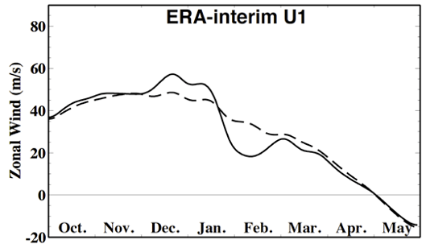
図6：成層圏の北極渦強度に相当する50〜70°N平均した1 hPa高度における帯状平均東西風の季節変化図。実線は1979〜2006年の気候的な平均値。破線はQBO西風相で、かつ太陽活動極大期の場合。（Yamashita et al. 2015のFigure 2）
Yamashita et al.（2015）では、客観解析データと化学気候モデル（CCM）実験の出力を用いて、論文執筆当時まで未解明であった季節変化のプロセスを成層圏－対流圏相互作用を包括的に捉える新たな視点から考察しました。
12月には北極域は極夜である一方、北半球低中緯度域には太陽の光が当たるため、12月の極大期にはオゾンを介した極渦強化が見られると考えられます。またQBO西風相に伴う影響も極渦強化として現れます。このために、12月には極渦周辺においてQBOが西風相のときの惑星波の伝播と子午面循環の特徴が、太陽活動が極大期のときの特徴と類似することになり、QBO と太陽活動に伴うプロセスが共に極渦を強めるように働くことが分かりました。
12 月に極渦が強い場合、12〜１月にかけて対流圏で北大西洋振動（NAO）正位相の発達を伴いやすく（図7）、その構造が対流圏における惑星波の波数1の振幅を増大させるようになっていました。これによって1月に対流圏から成層圏への惑星波の上向き伝播が増大し、2〜3月に成層圏で弱い極渦がもたらされており、一連の季節進行が説明される可能性があることが分かりました。
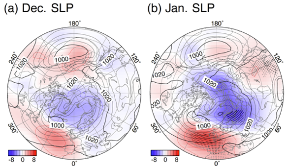
図7：（a）12月平均、（b）1月平均した海面更正気圧（SLP）。等値線：気候値、陰影：偏差。北大西洋域（図の下側）でNAOに対応する南北逆符号の偏差が強まっている。（Yamashita et al. 2015のFigure 5）
QBOを西風相と東風相、太陽活動を極大期と極小期に分け、これら2つの現象によって分類を行うと、ある年は4つの位相のうちどれかに分類されます。4つの位相全てについて明確な特徴が得られはしないのですが、QBO西風相で、かつ太陽活動極大期の場合には、12月の北極渦が平均より強いものの、２～３月には弱まる特徴が知られています（図6）。
Yamashita et al.（2015）では、客観解析データと化学気候モデル（CCM）実験の出力を用いて、論文執筆当時まで未解明であった季節変化のプロセスを成層圏－対流圏相互作用を包括的に捉える新たな視点から考察しました。
12月には北極域は極夜である一方、北半球低中緯度域には太陽の光が当たるため、12月の極大期にはオゾンを介した極渦強化が見られると考えられます。またQBO西風相に伴う影響も極渦強化として現れます。このために、12月には極渦周辺においてQBOが西風相のときの惑星波の伝播と子午面循環の特徴が、太陽活動が極大期のときの特徴と類似することになり、QBO と太陽活動に伴うプロセスが共に極渦を強めるように働くことが分かりました。
12 月に極渦が強い場合、12〜１月にかけて対流圏で北大西洋振動（NAO）正位相の発達を伴いやすく（図7）、その構造が対流圏における惑星波の波数1の振幅を増大させるようになっていました。これによって1月に対流圏から成層圏への惑星波の上向き伝播が増大し、2〜3月に成層圏で弱い極渦がもたらされており、一連の季節進行が説明される可能性があることが分かりました。
論文発表
- Yamashita, Y., H. Akiyoshi, T. G. Shepherd, and M. Takahashi (2015): The combined influences of westerly phase of the Quasi-Biennial Oscillation and 11-year solar maximum conditions on the Northern Hemisphere extratropical winter circulation, J. Meteor. Soc. Japan, 93(6), 629–644, doi:10.2151/jmsj.2015-054.
関連リンク
北極域オゾン
成層圏の高度約15〜30 kmで大気中にオゾンが多く含まれる場所がオゾン層と呼ばれています。1980年代以降、南極域で大規模なオゾン破壊が起こり、オゾン層が薄くなって穴が開いたように見える領域（オゾンホール）が現れるようになりました。近年では、モントリオール議定書に始まる国際的なオゾン破壊物質の生産・排出規制が成功し、オゾン層は長期的には回復の兆しが見えています。
北極域では南極域ほど成層圏の気温が低温にならないため、南極域のような大規模なオゾン破壊は起こらないと考えられてきました。しかし、近年オゾン層が回復していく中で、2010〜2011年や2019〜2020年には春先に南極のオゾン破壊量に匹敵するような大規模オゾン破壊が起きました。これらの年には、対流圏から成層圏に伝播する波活動が不活発になり、成層圏の極渦が安定して北極域で極成層圏雲（Polar Stratospheric Cloud: PSC）と呼ばれるオゾン破壊反応を促進する雲が発生するほどの低温が継続しました。
ひと冬を通した平均的な極渦の変化傾向は、成層圏準２年周期振動（quasi-biennial oscillation: QBO）や太陽活動の11年周期といった、ひと冬よりもゆっくりとした現象の影響を受けています。そこで、このようなひと冬の変化よりもゆっくりとした現象を指標とすれば、春先の大規模オゾン破壊を冬に入る前に予想できるのではないかと考えました。
Yamashita et al.（2021）では、衛星観測、客観解析データと化学気候モデル（CCM）実験の出力を用いて、大規模オゾン破壊の要因を明らかにし事前予測につなげるための研究を行いました。
QBOの西風相と東風相で成層圏の波活動が変わり、太陽活動の極小期と極大期で紫外線量や上部成層圏の気温が変わることが知られています。これらQBOと太陽活動の指標を用いて4種類の年に分類し、春先の大規模オゾン破壊の要因を調べました。衛星観測を用いて春先のオゾン全量を比較すると、QBOが西風相、太陽活動が極小期の場合に最もオゾン全量が少なくなります（図8）。前述の2010〜2011年や2019〜2020年の冬季も、このケースに該当します。
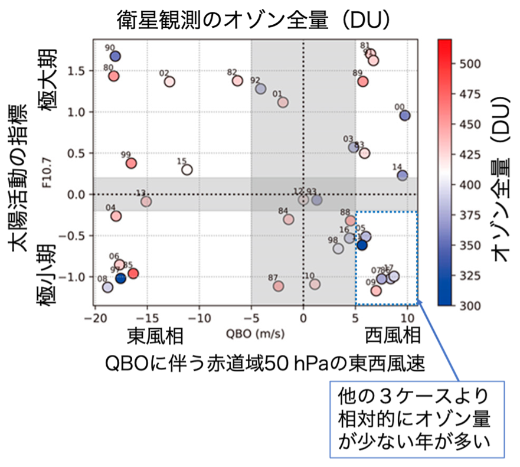
図8：QBOに伴う赤道域50 hPaの高度の東西風速（m/s）を横軸に、太陽活動の11年周期の指標を縦軸に取り、TOMS/OMIの衛星観測で得られた3月のオゾン全量（DU)を黒丸内の色で示したもの。QBOが西風相、太陽活動が極小期のケースでは、他の３ケースと比べて相対的にオゾン量が少ない年が多いことがわかる。QBOが西風相または東風相の基準を満たし、太陽活動が極小期または極大期の基準を満たす場合を白、QBOか太陽活動のどちらかが基準を満たさない場合を灰色で表示。Figure 2(a)を元に作成。（Yamashita et al. 2021のFigure 2を元に作成）
大気中で化学反応を起こさないという仮想的な条件の下で風によるオゾンの輸送をモデルで計算し、化学反応が計算されているオゾンと比較することで、化学反応と輸送によるオゾン量の変化を区別できます。その結果、輸送による変化が化学反応による変化を大きく上回り、春先の3月における化学反応による変化は全体の1〜2割程度であることがわかりました。
必ずというほど明確ではなく、観測データの期間が短く事例数が少ないという問題はあるものの、QBOが西風相、太陽活動が極小期の際に主に大気中の輸送により春先のオゾン量が少ない傾向にあることがわかりました。将来的に事例数を増やすことができれば、QBOや太陽11年周期のような、ひと冬の変化よりもゆっくりとした現象を指標として春先の大規模オゾン破壊を冬に入る前に事前予測することにつながります。
北極域では南極域ほど成層圏の気温が低温にならないため、南極域のような大規模なオゾン破壊は起こらないと考えられてきました。しかし、近年オゾン層が回復していく中で、2010〜2011年や2019〜2020年には春先に南極のオゾン破壊量に匹敵するような大規模オゾン破壊が起きました。これらの年には、対流圏から成層圏に伝播する波活動が不活発になり、成層圏の極渦が安定して北極域で極成層圏雲（Polar Stratospheric Cloud: PSC）と呼ばれるオゾン破壊反応を促進する雲が発生するほどの低温が継続しました。
ひと冬を通した平均的な極渦の変化傾向は、成層圏準２年周期振動（quasi-biennial oscillation: QBO）や太陽活動の11年周期といった、ひと冬よりもゆっくりとした現象の影響を受けています。そこで、このようなひと冬の変化よりもゆっくりとした現象を指標とすれば、春先の大規模オゾン破壊を冬に入る前に予想できるのではないかと考えました。
Yamashita et al.（2021）では、衛星観測、客観解析データと化学気候モデル（CCM）実験の出力を用いて、大規模オゾン破壊の要因を明らかにし事前予測につなげるための研究を行いました。
QBOの西風相と東風相で成層圏の波活動が変わり、太陽活動の極小期と極大期で紫外線量や上部成層圏の気温が変わることが知られています。これらQBOと太陽活動の指標を用いて4種類の年に分類し、春先の大規模オゾン破壊の要因を調べました。衛星観測を用いて春先のオゾン全量を比較すると、QBOが西風相、太陽活動が極小期の場合に最もオゾン全量が少なくなります（図8）。前述の2010〜2011年や2019〜2020年の冬季も、このケースに該当します。
大気中で化学反応を起こさないという仮想的な条件の下で風によるオゾンの輸送をモデルで計算し、化学反応が計算されているオゾンと比較することで、化学反応と輸送によるオゾン量の変化を区別できます。その結果、輸送による変化が化学反応による変化を大きく上回り、春先の3月における化学反応による変化は全体の1〜2割程度であることがわかりました。
必ずというほど明確ではなく、観測データの期間が短く事例数が少ないという問題はあるものの、QBOが西風相、太陽活動が極小期の際に主に大気中の輸送により春先のオゾン量が少ない傾向にあることがわかりました。将来的に事例数を増やすことができれば、QBOや太陽11年周期のような、ひと冬の変化よりもゆっくりとした現象を指標として春先の大規模オゾン破壊を冬に入る前に事前予測することにつながります。
論文発表
- Yamashita, Y., H. Akiyoshi, M. Takahashi (2021): Analysis of Arctic Spring Ozone Anomaly in the Phases of QBO and 11-Year Solar Cycle for 1979–2017, Atmosphere, 12(5), 582, doi:10.3390/atmos12050582.
関連リンク
成層圏から対流圏への物質輸送
大気中のオゾン量は、成層圏の高度20〜30 km付近で最も多くなっています（単位体積中の分子数に相当する個数密度に換算した場合）。中緯度域では寒冷渦（切離低気圧、寒冷低気圧とも呼ぶ）など発達した低気圧に伴う圏界面高度の低下により、成層圏から対流圏への物質輸送が生じ、地上オゾンの増加を伴う事例がしばしば報告されていました。
Yamashita et al.（2017）では、気象現象と大気組成の関係に着目し、発達した低気圧に伴って起こる成層圏から対流圏への物質輸送プロセスには、従来の空間分解能50〜200 km程度の低中分解能のモデルでは再現できない水平100 kmよりも小さいものが含まれ（図9）、成層圏からの流入量が過小評価されている可能性がある問題に取り組みました。
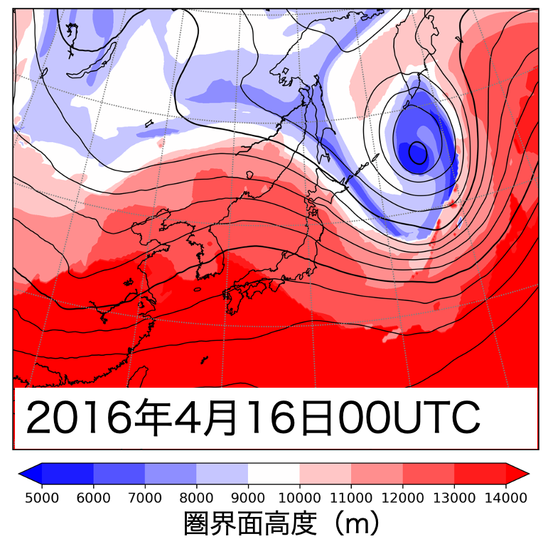
図9：水平約25 kmの高分解能で提供されている客観解析データERA-5から作成した2016年4月16日00UTCの対流圏界面高度（陰影）と500 hPaジオポテンシャル高度（等値線）。500 hPaでは、トラフが切離して孤立した低気圧が形成されており、低気圧中心の東側から南側を通って西側に圏界面高度の低い領域が伸びている。極値が現れている幅は、水平100 kmよりも小さくなっている。
本研究を行うには高解像度の空間分解能を必要とする一方で、低気圧の挙動には半球規模の惑星波との相互作用が無視できないため、全球高分解能の実験が可能な非静力学正20面体格子大気モデル（Nonhydrostatic Icosahedral Atmospheric Model：NICAM）を用いました。
輸送プロセスを再現するために必要なモデルの解像度を調べるために、低分解能（約220 km）、中分解能（約56 km）、高分解能（約14 km）３種類の水平分解能に設定したNICAMを使い「京」コンピュータで大規模計算を行いました。その結果、成層圏から対流圏への物質輸送に伴って起こる地表オゾン濃度の増加をよりよく再現するには、少なくとも14〜56 kmの水平分解能が必要であることが分かりました。
中緯度の発達した低気圧は、対流圏で周囲よりも気温が低く重い空気を伴っている一方で、成層圏では周囲よりも気温が高く軽い空気があるために、上空までの大気質量の積算である気圧は周囲よりも低くなっています。対流圏界面は対流圏で上空ほど気温が低下し成層圏で上昇する境界に相当しますが、対流圏で周囲よりも気温が低く成層圏で高いために、低気圧中心付近では圏界面高度の低下を伴います（図10緑×）。
また低気圧中心付近の等温位面は、対流圏で上に凸の構造となり（図10黒線）、中心付近の空気を上層から下層へと断熱的に輸送しうるようになります。これは、圏界面高度の低下で周囲よりも低い高度にある成層圏の空気が対流圏に流入しやすくなることを意味しています。
発達した低気圧の南側には等温位線が集中した傾圧帯があり、細かい空間構造を持った傾圧帯の幅はモデルの水平分解能が細かいほど狭くなります（図中に傾圧帯の幅を記載）。傾圧帯の幅が狭いことで成層圏から流入してきた空気は、より地表に近い高度まで小さな空間スケールで侵入できるようになっています（図10青色）。
このように、低気圧南側の傾圧帯の幅の再現性がモデルの水平分解能に強く依存するために、成層圏から対流圏への物質輸送にも分解能依存性が生じていることが分かりました。中高分解能（14〜56 km）であれば、700 hPaの高度（地上3000m付近）まで高濃度の成層圏空気が流入できるようになっており、成層圏から対流圏への物質輸送に伴って起こる地表オゾン濃度の増加を再現するためには、水平14〜56 kmの分解能が必要であることが分かりました。
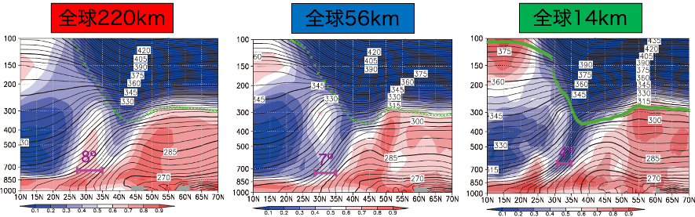
図10：低分解能（約220 km）、中分解能（約56 km）、高分解能（約14 km）3種類の水平分解能で行った実験結果。低気圧中心周辺の東経120〜150度で平均した緯度―高度面の値を示す。色：相対湿度（1.0が100%に対応、青が乾燥した空気、赤が湿潤な空気）、黒線：温位（K）、緑×：圏界面の場所。（Yamashita et al. 2017のFigure 2）
発達した低気圧そのものは1000 km以上の大きな水平スケールを持っているため、低気圧中心付近の上に凸の等値線の構造は、いずれの分解能でも再現されている。一方で、低気圧の南側にある等温位線が集中した傾圧帯の幅（図中に文字で記載）は、モデルの水平分解能が高いほど狭くなる。
Yamashita et al.（2017）では、気象現象と大気組成の関係に着目し、発達した低気圧に伴って起こる成層圏から対流圏への物質輸送プロセスには、従来の空間分解能50〜200 km程度の低中分解能のモデルでは再現できない水平100 kmよりも小さいものが含まれ（図9）、成層圏からの流入量が過小評価されている可能性がある問題に取り組みました。
本研究を行うには高解像度の空間分解能を必要とする一方で、低気圧の挙動には半球規模の惑星波との相互作用が無視できないため、全球高分解能の実験が可能な非静力学正20面体格子大気モデル（Nonhydrostatic Icosahedral Atmospheric Model：NICAM）を用いました。
輸送プロセスを再現するために必要なモデルの解像度を調べるために、低分解能（約220 km）、中分解能（約56 km）、高分解能（約14 km）３種類の水平分解能に設定したNICAMを使い「京」コンピュータで大規模計算を行いました。その結果、成層圏から対流圏への物質輸送に伴って起こる地表オゾン濃度の増加をよりよく再現するには、少なくとも14〜56 kmの水平分解能が必要であることが分かりました。
中緯度の発達した低気圧は、対流圏で周囲よりも気温が低く重い空気を伴っている一方で、成層圏では周囲よりも気温が高く軽い空気があるために、上空までの大気質量の積算である気圧は周囲よりも低くなっています。対流圏界面は対流圏で上空ほど気温が低下し成層圏で上昇する境界に相当しますが、対流圏で周囲よりも気温が低く成層圏で高いために、低気圧中心付近では圏界面高度の低下を伴います（図10緑×）。
また低気圧中心付近の等温位面は、対流圏で上に凸の構造となり（図10黒線）、中心付近の空気を上層から下層へと断熱的に輸送しうるようになります。これは、圏界面高度の低下で周囲よりも低い高度にある成層圏の空気が対流圏に流入しやすくなることを意味しています。
発達した低気圧の南側には等温位線が集中した傾圧帯があり、細かい空間構造を持った傾圧帯の幅はモデルの水平分解能が細かいほど狭くなります（図中に傾圧帯の幅を記載）。傾圧帯の幅が狭いことで成層圏から流入してきた空気は、より地表に近い高度まで小さな空間スケールで侵入できるようになっています（図10青色）。
このように、低気圧南側の傾圧帯の幅の再現性がモデルの水平分解能に強く依存するために、成層圏から対流圏への物質輸送にも分解能依存性が生じていることが分かりました。中高分解能（14〜56 km）であれば、700 hPaの高度（地上3000m付近）まで高濃度の成層圏空気が流入できるようになっており、成層圏から対流圏への物質輸送に伴って起こる地表オゾン濃度の増加を再現するためには、水平14〜56 kmの分解能が必要であることが分かりました。
発達した低気圧そのものは1000 km以上の大きな水平スケールを持っているため、低気圧中心付近の上に凸の等値線の構造は、いずれの分解能でも再現されている。一方で、低気圧の南側にある等温位線が集中した傾圧帯の幅（図中に文字で記載）は、モデルの水平分解能が高いほど狭くなる。
論文発表
- Yamashita, Y., M. Takigawa, K. Ishijima, H. Akiyoshi, C. Kodama, H. Yashiro, and M. Satoh (2017): Resolution dependency of numerically simulated stratosphere-to-troposphere transport associated with mid-latitude closed cyclones in early spring around Japan, SOLA, 13, 186–191, doi:10.2151/sola.2017-034.
北極域へのエアロゾル輸送
大気中を浮遊する微小な粒子であるエアロゾルは、化石燃料の燃焼等の人間活動に伴う放出物や森林火災等の自然起源の放出物から生成され、大気の流れにより輸送されて、雲粒中に取り込まれると降水等により大気中から除去されます（図11）。
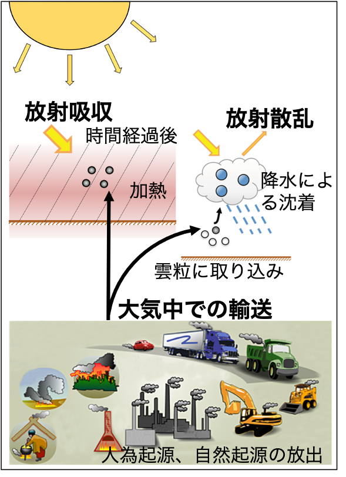
図11：大気中を浮遊するエアロゾルの一種であるブラックカーボン（BC）粒子の大気中での振る舞いと気候への影響を表した模式図。（Kondo 2015のFigure1を元に作成）
エアロゾルの一種であるブラックカーボン（BC）粒子は、黒色炭素、すす粒子、元素状炭素とも呼ばれます。BCは可視光域や赤外域の太陽光を効率的に吸収して大気加熱に働き、また雪氷／海氷面に沈着すると融解を促進するために、気候変動への影響が懸念されています。特に、北極域のような人間活動が活発ではない場所では、遠方の発生源から輸送されたBCが影響を及ぼすと考えられるため、輸送シミュレーションの精度向上も必要とされています。
これまでの研究から、温帯低気圧周辺の降水量の再現性が輸送モデルの分解能に依存するために、低分解能のモデルでは降水によるエアロゾル沈着量を過大評価していると考えられています。Yamashita et al.（2021）では、温帯低気圧と前線システムによる3次元的なエアロゾル輸送の再現性がモデル分解能により異なるという新たな視点から、輸送シミュレーションの精度向上の問題に取り組みました。
エアロゾル輸送のシミュレーションには、非静力学正20面体格子大気モデル（Nonhydrostatic Icosahedral Atmospheric Model：NICAM）にエアロゾル輸送モデルSPRINTARSを導入したNICAM−SPRINTARを用いました。このモデルには、アジアの汚染源から人為的に放出されるBC粒子に加え、森林火災により放出されるBC粒子が含まれています。温帯低気圧と前線システムの空間構造を再現できるように、高分解能（約56 km）の水平分解能で計算を行い、比較のために低分解能（約220 km）でも計算を行いました。
アジアの汚染源から北極域へのBC輸送の経路として、ベーリング海付近が重要と考えられています。温帯低気圧による極域への輸送は、低気圧中心の東側で起こりやすいため、シベリア域からベーリング海付近に中心を持った低気圧による輸送を調べることにしました。
ベーリング海は、海洋研究開発機構（JAMSTEC）の海洋地球研究船「みらい」北極圏航海の航路となっており、2016年8月22日から10月6日まで行われた北極圏航海で収集されたBC観測データを輸送モデルの評価のために利用しました（図12）。2016年の「みらい」北極圏航海では、チュクチ海から八戸港へ帰港する9月末にBC粒子濃度が300 ng/m3程度まで増加する高濃度イベントが観測されました。
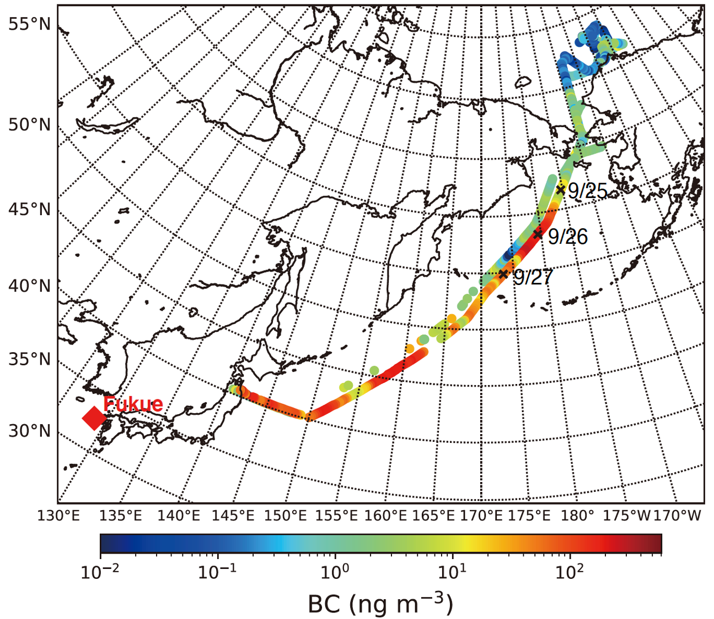
図12：海洋地球研究船「みらい」北極圏航海の航路と航路上のBC粒子濃度（色）。×印：2016年9月25日、9月26日、9月27日の00UTCにおける位置。（Yamashita et al. 2021のFigure 2a）。
9月25日〜26日にかけて高濃度となっていることが分かる。
2016年9月末の高濃度イベント時には、東アジアからシベリアを経て北極域に至る輸送経路上に、大きな水平スケール（約2000 km）を持ち、この時期としては近年で最も発達した温帯低気圧が存在していました。高分解能（約56 km）の輸送モデルの結果を解析すると、低気圧中心付近と周辺の低気圧まで続く数千kmの前線システム付近にフィラメント状の高濃度BC域が偏在しており、低気圧の移動に伴って低気圧の東側にあたるベーリング海付近から北極域へ前線に沿って上昇しながら移動していました（図13）。
一方、低分解能（約220 km）では、前線付近の高濃度BC域の構造がぼやけていることに加え、高分解能よりも高濃度域の到達高度が低く極域への到達量も少ないという違いがありました。このことは、温帯低気圧と前線に伴う3次元的な輸送が、北極域へのBC輸送に影響を及ぼし、高分解能のモデルでその再現性が向上しうることを意味しています。
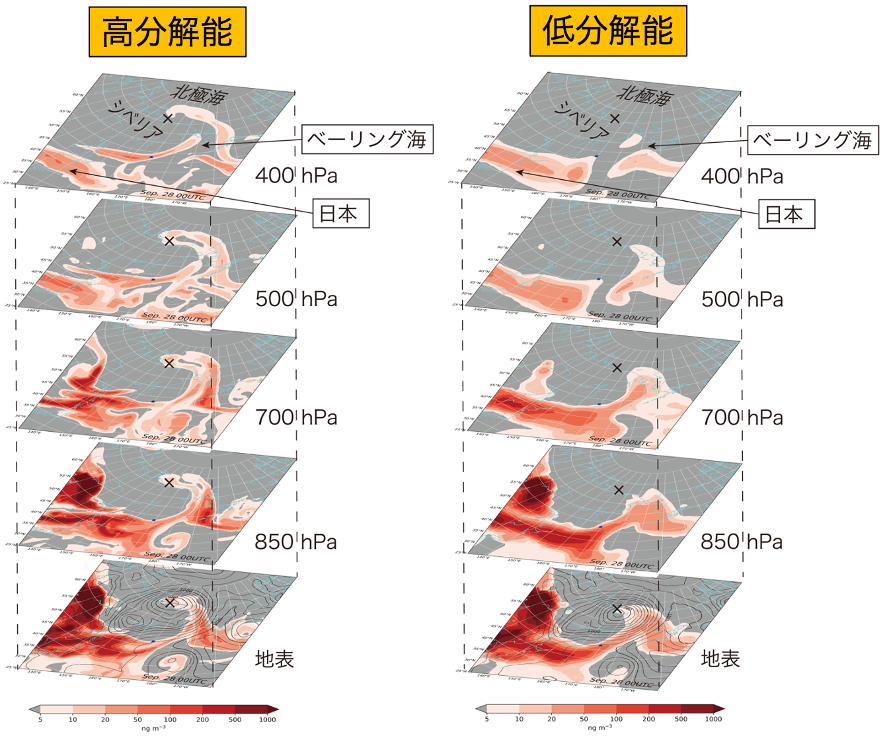
図13：NICAM‐SPRINTARSによる高分解能（約56 km）と低分解能（約220 km）の計算結果。地表面、850 hPa（1500m付近）、700 hPa（3000 m付近）、500 hPa（5500 m付近）、400 hPa（7000 m付近）の値を並べた。色はBC粒子濃度を表し、等値線は気圧（細線：4 hPa、太線：20 hPa）、×印は低気圧中心の位置を表す。（Yamashita et al. 2021のFigure 8と9を元に作成）
高分解能では、低気圧中心付近と周辺の別の低気圧まで続く数千kmの前線システム付近にフィラメント状の高濃度BC域が偏在していることが読み取れる。また高分解能では、低気圧中心の東側で高濃度域が上昇しながら極側まで到達している。低分解能では、前線付近の構造がぼやけていることに加え、高分解能よりも高濃度域の到達高度が低く極域への到達量も少ない。
2016年9月末の高濃度イベント時に得られた極域へのBC輸送の分解能依存性が、似たような発達した低気圧イベントに共通して見られるものなのか確かめることにしました。過去気候の再現実験であれば、数十年間のシミュレーション結果を解析するところですが、放出量データの期間が限られ、エアロゾル輸送モデルの高解像度実験の計算コストも大きいため、シミュレーション結果を得ることができた2015〜2018年の9月における101個の発達した低気圧イベントについて合成図解析を行いました。
BC粒子濃度は低気圧中心の西側よりも東側で相対的に高く、東側ではより北極側、より高高度まで濃度が高くなっていました（図14）。BC粒子が高濃度の領域では相対的に上昇流が強く、極域へのBC粒子の流入が低気圧と前線システムに伴う上昇流と関連することを示しています。
高分解能（約56 km）の計算結果と低分解能（約220 km）の計算結果を比較すると、上昇流の最大値は、高分解能の方が低分解能よりも3倍程度も大きく、対流圏中層付近のBC粒子の濃度や北極域へ流入するBCフラックスを倍程度まで変えていました（図14、表1）。上昇流最大となる領域は水平スケールが小さく、このことは、分解能が高いほど上方への輸送が増大するために極域へのBC粒子の流入量が大きくなり観測結果に近くなることを意味しています。
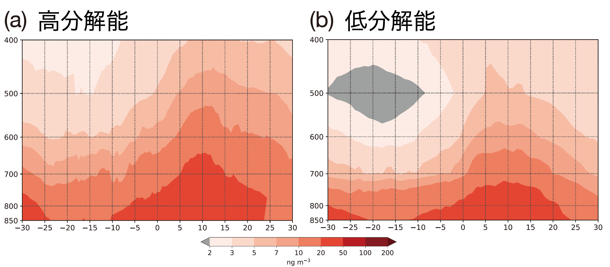
図14：発達した低気圧101事例の合成図解析により得られた低気圧の中心緯度上におけるBC粒子濃度の経度−高度断面図。経度0度は低気圧の中心経度を、経度の値は低気圧中心からのずれを表す。(a) 高分解能（約56 km）と低分解能（約220 km）の計算結果。色はBC粒子濃度を表す。（Yamashita et al. 2021のFigure 12）
高分解能、低分解能ともに、低気圧中心の東側では西側よりも高濃度となっている。高分解能では、対流圏中層付近の濃度が低分解能の倍程度まで大きくなっている。
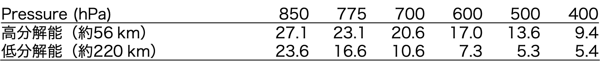
表1：ベーリング海付近の東経150度から西経160度の経度で北緯66度を横切って北極域に流入するBCフラックス（kg/m2/s）。発達した101事例の合成図解析の結果。（Yamashita et al. 2021のTable 4を元に作成）
対流圏中層付近では、高分解能の方が低分解能よりも倍程度大きい。
本研究により、これまで指摘されていた温帯低気圧周辺の沈着量の分解能依存性の他に、低気圧周辺の上昇流の分解能依存性が北極域へのBC流入量のシミュレーションにとって重要であることが明らかになりました。将来的には、高分解能の全球エアロゾル輸送モデルを用いていくことが望ましいと考えられます。
エアロゾルの一種であるブラックカーボン（BC）粒子は、黒色炭素、すす粒子、元素状炭素とも呼ばれます。BCは可視光域や赤外域の太陽光を効率的に吸収して大気加熱に働き、また雪氷／海氷面に沈着すると融解を促進するために、気候変動への影響が懸念されています。特に、北極域のような人間活動が活発ではない場所では、遠方の発生源から輸送されたBCが影響を及ぼすと考えられるため、輸送シミュレーションの精度向上も必要とされています。
これまでの研究から、温帯低気圧周辺の降水量の再現性が輸送モデルの分解能に依存するために、低分解能のモデルでは降水によるエアロゾル沈着量を過大評価していると考えられています。Yamashita et al.（2021）では、温帯低気圧と前線システムによる3次元的なエアロゾル輸送の再現性がモデル分解能により異なるという新たな視点から、輸送シミュレーションの精度向上の問題に取り組みました。
エアロゾル輸送のシミュレーションには、非静力学正20面体格子大気モデル（Nonhydrostatic Icosahedral Atmospheric Model：NICAM）にエアロゾル輸送モデルSPRINTARSを導入したNICAM−SPRINTARを用いました。このモデルには、アジアの汚染源から人為的に放出されるBC粒子に加え、森林火災により放出されるBC粒子が含まれています。温帯低気圧と前線システムの空間構造を再現できるように、高分解能（約56 km）の水平分解能で計算を行い、比較のために低分解能（約220 km）でも計算を行いました。
アジアの汚染源から北極域へのBC輸送の経路として、ベーリング海付近が重要と考えられています。温帯低気圧による極域への輸送は、低気圧中心の東側で起こりやすいため、シベリア域からベーリング海付近に中心を持った低気圧による輸送を調べることにしました。
ベーリング海は、海洋研究開発機構（JAMSTEC）の海洋地球研究船「みらい」北極圏航海の航路となっており、2016年8月22日から10月6日まで行われた北極圏航海で収集されたBC観測データを輸送モデルの評価のために利用しました（図12）。2016年の「みらい」北極圏航海では、チュクチ海から八戸港へ帰港する9月末にBC粒子濃度が300 ng/m3程度まで増加する高濃度イベントが観測されました。
9月25日〜26日にかけて高濃度となっていることが分かる。
2016年9月末の高濃度イベント時には、東アジアからシベリアを経て北極域に至る輸送経路上に、大きな水平スケール（約2000 km）を持ち、この時期としては近年で最も発達した温帯低気圧が存在していました。高分解能（約56 km）の輸送モデルの結果を解析すると、低気圧中心付近と周辺の低気圧まで続く数千kmの前線システム付近にフィラメント状の高濃度BC域が偏在しており、低気圧の移動に伴って低気圧の東側にあたるベーリング海付近から北極域へ前線に沿って上昇しながら移動していました（図13）。
一方、低分解能（約220 km）では、前線付近の高濃度BC域の構造がぼやけていることに加え、高分解能よりも高濃度域の到達高度が低く極域への到達量も少ないという違いがありました。このことは、温帯低気圧と前線に伴う3次元的な輸送が、北極域へのBC輸送に影響を及ぼし、高分解能のモデルでその再現性が向上しうることを意味しています。
高分解能では、低気圧中心付近と周辺の別の低気圧まで続く数千kmの前線システム付近にフィラメント状の高濃度BC域が偏在していることが読み取れる。また高分解能では、低気圧中心の東側で高濃度域が上昇しながら極側まで到達している。低分解能では、前線付近の構造がぼやけていることに加え、高分解能よりも高濃度域の到達高度が低く極域への到達量も少ない。
2016年9月末の高濃度イベント時に得られた極域へのBC輸送の分解能依存性が、似たような発達した低気圧イベントに共通して見られるものなのか確かめることにしました。過去気候の再現実験であれば、数十年間のシミュレーション結果を解析するところですが、放出量データの期間が限られ、エアロゾル輸送モデルの高解像度実験の計算コストも大きいため、シミュレーション結果を得ることができた2015〜2018年の9月における101個の発達した低気圧イベントについて合成図解析を行いました。
BC粒子濃度は低気圧中心の西側よりも東側で相対的に高く、東側ではより北極側、より高高度まで濃度が高くなっていました（図14）。BC粒子が高濃度の領域では相対的に上昇流が強く、極域へのBC粒子の流入が低気圧と前線システムに伴う上昇流と関連することを示しています。
高分解能（約56 km）の計算結果と低分解能（約220 km）の計算結果を比較すると、上昇流の最大値は、高分解能の方が低分解能よりも3倍程度も大きく、対流圏中層付近のBC粒子の濃度や北極域へ流入するBCフラックスを倍程度まで変えていました（図14、表1）。上昇流最大となる領域は水平スケールが小さく、このことは、分解能が高いほど上方への輸送が増大するために極域へのBC粒子の流入量が大きくなり観測結果に近くなることを意味しています。
高分解能、低分解能ともに、低気圧中心の東側では西側よりも高濃度となっている。高分解能では、対流圏中層付近の濃度が低分解能の倍程度まで大きくなっている。
対流圏中層付近では、高分解能の方が低分解能よりも倍程度大きい。
本研究により、これまで指摘されていた温帯低気圧周辺の沈着量の分解能依存性の他に、低気圧周辺の上昇流の分解能依存性が北極域へのBC流入量のシミュレーションにとって重要であることが明らかになりました。将来的には、高分解能の全球エアロゾル輸送モデルを用いていくことが望ましいと考えられます。
論文発表
- Yamashita, Y., M. Takigawa, D. Goto, H. Yashiro, M. Satoh, Y. Kanaya, F. Taketani, and T. Miyakawa (2021): Effect of model resolution on black Carbon transport from Siberia to the Arctic associated with the well-developed low-pressure systems in September, J. Meteor. Soc. Japan, 99(4), doi:10.2151/jmsj.2021-014.
関連リンク
排出量推定
パリ協定では、世界の平均気温上昇を産業革命以前に比べて2℃より十分低く保つとともに、1.5℃に抑える努力を追求する目標が定められました。目標の達成に向けて、参加各国は「自国が決定する貢献（Nationally Determined Contribution：NDC）」を定め、グローバルストックテイク（Global Stocktake：GST、世界全体としての実施状況の検討）でNDC達成度を5年ごとに評価することになりました。
参加各国は、GSTの評価結果を受けてNDCをより野心的に更新・強化することが求められており、世界の化石燃料燃焼起源の二酸化炭素（CO2）排出量の約４分の３を占める都市域の削減ポテンシャルを最大限に活用して各国の排出量を削減することは、パリ協定の目標達成に向けて大きな鍵となります。排出削減の実効性を担保するためには、都市やその周辺における排出量の推定が必須で、特に世界の大気濃度を一様に把握できる衛星観測の利活用が期待されています。
科学コミュニティがGSTに果たせる役割の一つとして、そうした都市域の排出量などを衛星観測と輸送モデルを組み合わせて推定し、都市域の排出インベントリを改良していくことが挙げられます。衛星観測を利活用していくことで、これまでの排出インベントリで課題となっていた未知の排出源や、インベントリ作成後の未確認の排出変化を把握するとともに、統計データ等の量・質がインベントリの精度に影響しうる地域での精度向上が期待されます。
今後打ち上げが予定されている温室効果ガス・水循環観測技術衛星（Global Observing SATellite for Greenhouse gases and Water cycle：GOSAT-GW）では、CO2、メタン（CH4）に加え二酸化窒素（NO2）の高解像度観測（精密観測モードで1〜3 km）が予定されており、化石燃料燃焼起源で放出されるCO2と同じく燃焼起源であるものの生物起源の影響を受けないNO2を同時観測することにより、CO2排出シグナルの検出性能向上が期待されます。
こうした性能を生かして都市域の排出推定を進めるためには、輸送モデルと組み合わせる必要があり、CO2輸送を扱う炭素循環モデルとNO2等の化学反応を扱うモデルとの統合が求められています。国立環境研究所では、国内で開発が行われてきた非静力学正20面体大気モデル（Nonhydrostatic Icosahedral Atmospheric Model：NICAM）を元にしたエアロゾル・炭素循環・大気化学モデルの統合利用を進め、CO2とNO2を同時に扱うことができるようになりました。今後は、輸送モデルを用いて排出推定を行うための手法開発に取り組んでいきます。
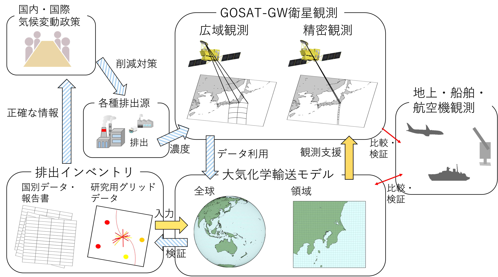
図15：衛星観測と輸送モデルを組み合わせた排出インベントリの改良についてのポンチ絵（山下他 2022の図1を元に作成）
参加各国は、GSTの評価結果を受けてNDCをより野心的に更新・強化することが求められており、世界の化石燃料燃焼起源の二酸化炭素（CO2）排出量の約４分の３を占める都市域の削減ポテンシャルを最大限に活用して各国の排出量を削減することは、パリ協定の目標達成に向けて大きな鍵となります。排出削減の実効性を担保するためには、都市やその周辺における排出量の推定が必須で、特に世界の大気濃度を一様に把握できる衛星観測の利活用が期待されています。
科学コミュニティがGSTに果たせる役割の一つとして、そうした都市域の排出量などを衛星観測と輸送モデルを組み合わせて推定し、都市域の排出インベントリを改良していくことが挙げられます。衛星観測を利活用していくことで、これまでの排出インベントリで課題となっていた未知の排出源や、インベントリ作成後の未確認の排出変化を把握するとともに、統計データ等の量・質がインベントリの精度に影響しうる地域での精度向上が期待されます。
今後打ち上げが予定されている温室効果ガス・水循環観測技術衛星（Global Observing SATellite for Greenhouse gases and Water cycle：GOSAT-GW）では、CO2、メタン（CH4）に加え二酸化窒素（NO2）の高解像度観測（精密観測モードで1〜3 km）が予定されており、化石燃料燃焼起源で放出されるCO2と同じく燃焼起源であるものの生物起源の影響を受けないNO2を同時観測することにより、CO2排出シグナルの検出性能向上が期待されます。
こうした性能を生かして都市域の排出推定を進めるためには、輸送モデルと組み合わせる必要があり、CO2輸送を扱う炭素循環モデルとNO2等の化学反応を扱うモデルとの統合が求められています。国立環境研究所では、国内で開発が行われてきた非静力学正20面体大気モデル（Nonhydrostatic Icosahedral Atmospheric Model：NICAM）を元にしたエアロゾル・炭素循環・大気化学モデルの統合利用を進め、CO2とNO2を同時に扱うことができるようになりました。今後は、輸送モデルを用いて排出推定を行うための手法開発に取り組んでいきます。
論文発表
- 山下陽介, 谷本浩志, 小田知宏 (2022): グローバル・ストックテイクに向けた人為起源CO2排出量推定に貢献する衛星観測計画と大気輸送モデル開発の展望, 天気, 69(2), 61–74, doi:10.24761/tenki.69.2_61.
関連リンク
[top]